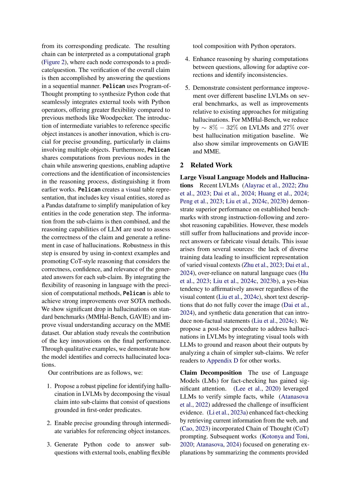
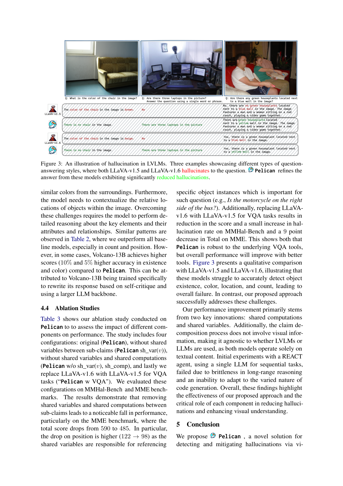
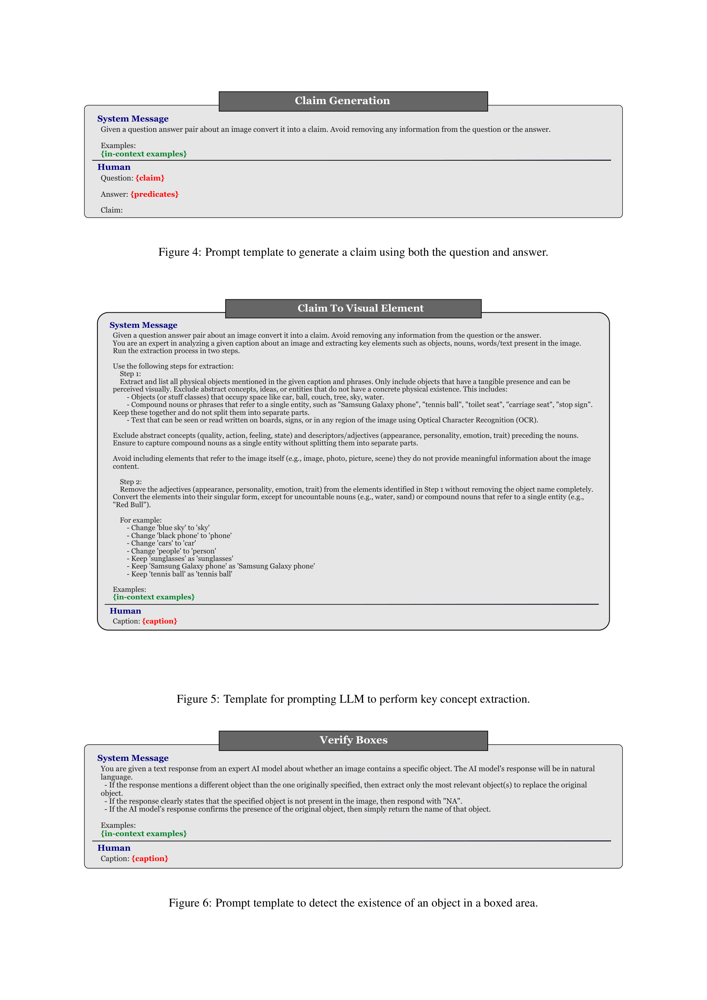

메타 정보
- 저자: Pritish Sahu, Karan Sikka, Ajay Divakaran (SRI International)
- 출판: arXiv preprint, 2024
- DOI: 10.48550/ARXIV.2407.02352

Figure 1

Figure 2
Figure 1

Figure 2
대규모 비전-언어 모델(LVLM)의 환각(hallucination)을 탐지하고 교정하기 위한 구조화된 파이프라인 Pelican을 제안한다. LVLM의 시각적 주장(claim)을 1차 술어(first-order predicate) 기반의 원자적 하위 주장으로 분해하고, Program-of-Thought 프롬프팅으로 Python 코드를 생성하여 외부 시각 도구(객체 탐지, VQA)를 유연하게 조합해 검증한 뒤, LLM의 추론 능력으로 최종 판정 및 교정을 수행한다. MMHal-Bench에서 환각률을 기존 최선 방법 대비 27% 감소시켰다.

Figure 3

Figure 4
Pelican은 LVLM 환각 문제에 대한 가장 체계적이고 구조화된 사후 교정(post-hoc correction) 프레임워크 중 하나이다. 핵심 강점은 복잡한 시각적 주장을 원자적 하위 주장으로 분해하고, 코드 생성을 통해 시각 도구를 유연하게 조합하며, 하위 주장 간 계산을 공유하는 일관된 파이프라인 설계에 있다. MMHal-Bench에서 Woodpecker 대비 38%, Volcano-13B 대비 27%의 환각률 감소는 이 접근법의 효과를 실증한다. 특히 count와 position 같은 도전적 범주에서 40% 이상의 향상은, 중간 변수와 공유 계산이 다중 객체 추론에 핵심적임을 보여준다. 다만, 시각 도구의 취약성이라는 근본적 한계가 여전하며, 논문 스스로 이를 솔직히 인정한 점은 높이 평가할 만하다. GPT-4o 의존성과 높은 추론 비용은 실용적 배포의 주요 장벽이며, 향후 경량화된 로컬 모델로의 대체와 도구 호출의 병렬화가 필요하다. 전반적으로, NLP의 fact-checking 패러다임을 멀티모달 환각 교정에 성공적으로 적용한 의미 있는 연구로, 신뢰할 수 있는 LVLM 구축을 위한 중요한 빌딩 블록을 제공한다.